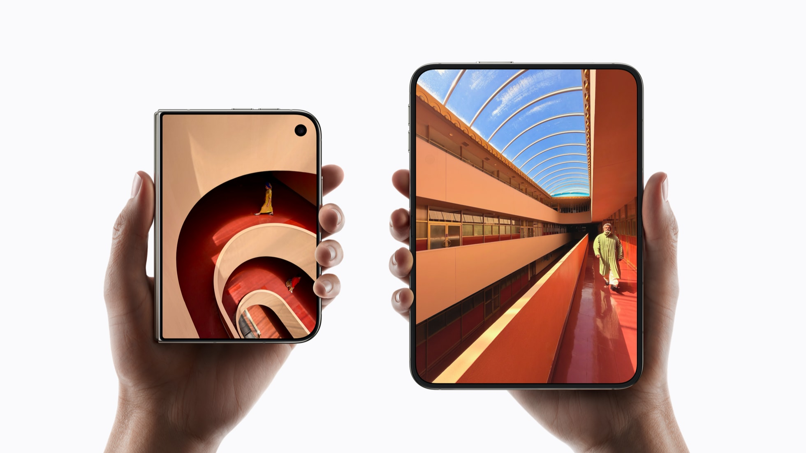

Notícias e Lançamentos
Lançamentos, ficha técnica e contexto para entender o que muda antes de comprar.

Mobilidade · Análise de lançamento
iPhone Duo: o que muda quando a tela abre?
Tela de 7,6 polegadas e A20 Pro em um iPhone que dobra. Confira a ficha, os preços e os pontos que merecem atenção antes de comprar.
Ler matéria